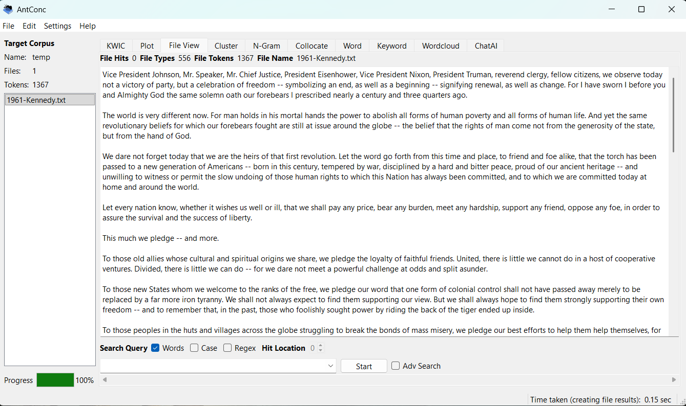
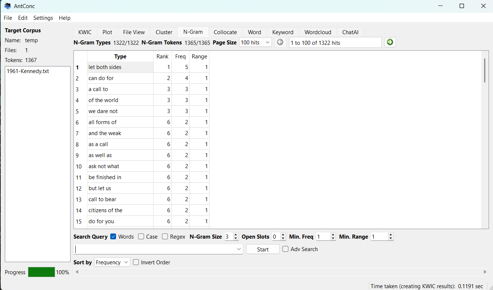
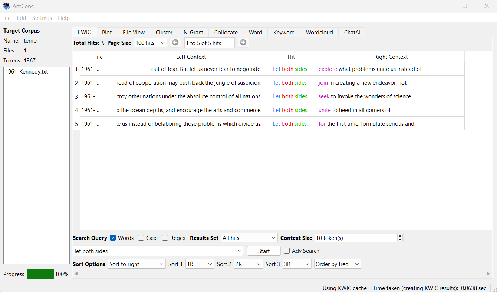
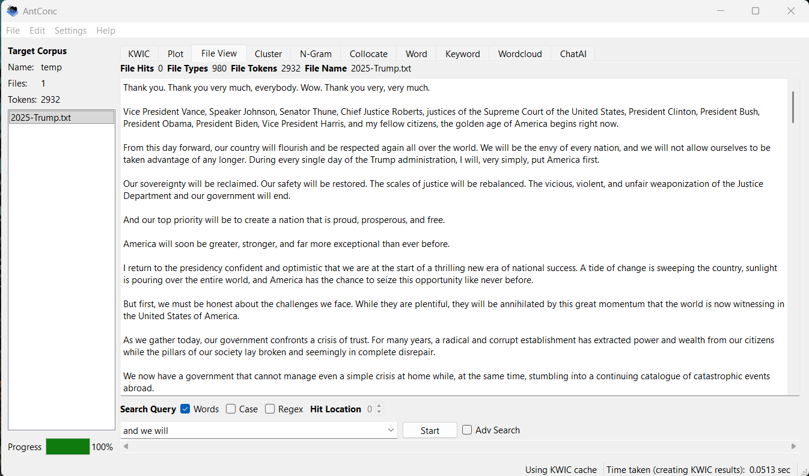
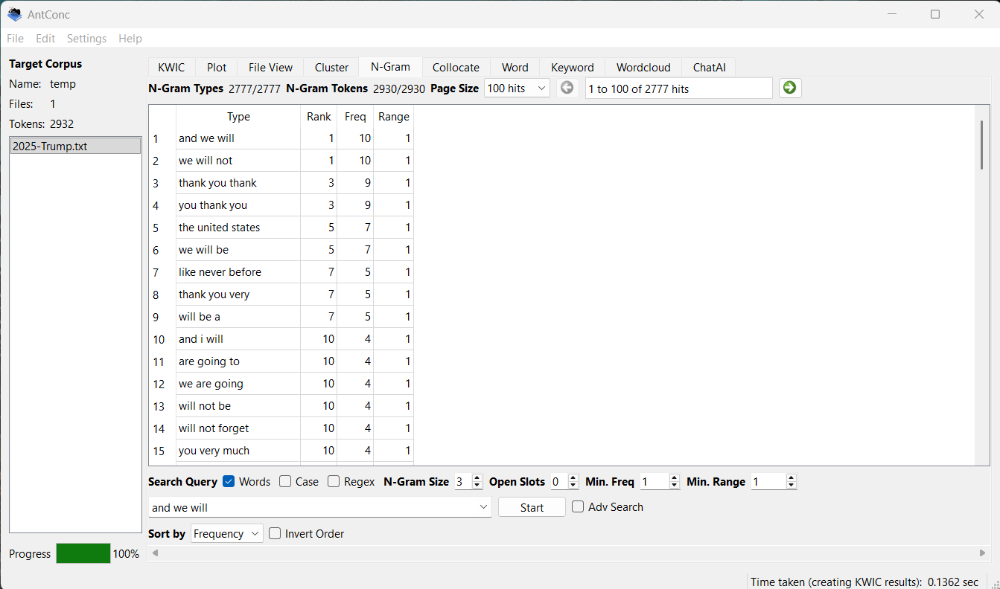
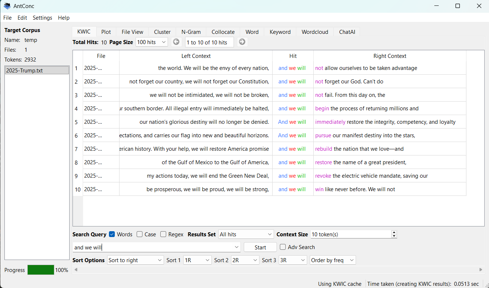

The two speeches that I chose to analyse where Kennedy's 1961 inagural speech and Trump's 2025 inagural speech.
The reason I chose these two speeches was because I was curious to see the difference between the speech from one of the most approved presidents pre-WW2 and one of the least approved post-WW2.
Link to SpeechesKennedy never really repeated himself so ngrams don't return many results for commonly repeated phrases or words. He talked a lot about unity and the world. Talked about a call to action, to bear arms. The second most repeated phrase was can do for. This refrences what America could do for the people and what the people can do for the freedom of man. Overall, his speech wasn't really that long, only about 1400 words.
To start off, he repeats phrases more than double the amount that Kennedy does. This makes sense because his speech is more than double that of Kennedy's. One of his most repeated phrases was to say thank you over and over again. In his speech instead of unity, he talked a lot about what he's going to do and what he isn't going to do by phrasing it with "we". In the middle of his repeated phrases he talked a lot about his politics. While Kennedy was very much about unity, and kept divisive politics mostly out of his speech, Trump wasn't shying away from speaking his politics in his speech.





